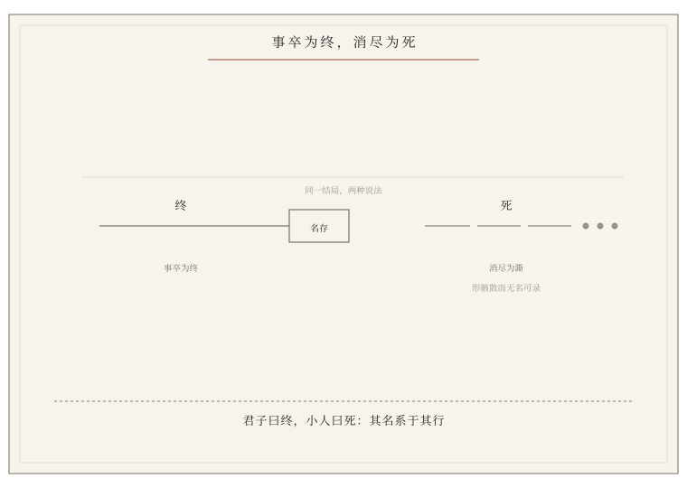

檀弓上 · 三·三十一 · 第 234 课
子张病，召申祥而语之曰：「君子曰终，小人曰死。吾今日其庶几乎？」注「申祥，子张子」「死之言澌也，事卒为终，消尽为澌」。
说什么事：一个将死的人，教儿子怎样说自己。
落在哪一层：礼，兼及礼意与人伦。论「终」与「死」一字之别。
为何编在此位：上节论丧中废业，此节论临终之名。业可废，名不可苟。
【经】子張病，召申祥而語之曰：「君子曰終，小人曰死。吾今日其庶幾乎？」
【注】申祥，子张子，欲使执丧，成己志也。死之言澌也，事卒为终，消尽为澌。《太史公传》曰「子张姓颛孙」，今曰申祥，周、秦之声，二者相近，未闻孰是。言易成也。
【疏】此一节论子张将终，戒勖其子之事。子张病困，召子申祥而语之曰：「若君子之死谓之为终」——言但身终，功名尚在；「若小人之死但谓之为死」——无功名可录，但形骸澌尽也。子张言此，欲令子执治其丧，每事从礼，使我得成君子。「吾今日其庶几乎」者，庶，幸也；几，冀也。言吾若平生为恶，不可幸冀为君子之人；吾即平生以善自修，今日将死，其幸冀为君子乎。汝但执丧成礼，以助我意，则功名得存，但身终而已。注「申祥，子张子」：以病而召之，与曾子召申、元同，故知「子张子」也。云「《太史公传》曰子张姓颛孙，今曰申祥，周、秦之声，二者相近」者，谓周国秦国之人言「申」与「颛」声音相近，今不知颛是、不知申是，故云「未闻孰是」。
病 疾困。
申祥 注「子张子」。姓颛孙氏之说，与「申祥」声近。
终 注「事卒为终」。事有结局。
死 注「死之言澌也，消尽为澌」。形骸消散。
庶几 注疏「庶，幸也；几，冀也」。有幸而可望。
子张病重，召申祥来对他说：「君子说『终』，小人说『死』。我今日大概可以算得上了吧？」
此节一段话，三个字眼：「终」「死」「庶几」。子张不讳言死，却要儿子明白，同一个结局有两种说法。说「终」的，是事有个结果而功名尚在；说「死」的，是形骸消尽而无名可录。末一句「吾今日其庶几乎」，是自问，也是托付：你执丧从礼，我这点功名才存得住。
第一层 一字之辨 注「事卒为终，消尽为澌」。终者，事之结束；死（澌）者，形之消散。同一件事，从「事」看是终，从「形」看是死。此辨极见古人对语言的敏感：不是避讳，是分辨。
第二层 名与丧之相连 疏「欲令子执治其丧，每事从礼，使我得成君子」。此中有一层今日已不易见的观念：一个人的「名」，要靠后人治丧从礼才存得住。丧礼不是给死者的排场，是为死者「成名」的最后一道手续。
第三层 庶几之谦 疏「言吾若平生为恶，不可幸冀为君子之人；吾即平生以善自修，今日将死，其幸冀为君子乎」。此句不是自许，是自问，且留了「几乎」二字。子张一生好为人师、言行有失，至死不敢自断为君子。此一层最动人：临死犹不敢自定其名。
第四层 申祥与颛孙 注辨其姓：太史公称子张姓颛孙，此记作申祥，「周、秦之声，二者相近，未闻孰是」。一个字之差，注不肯硬断。此种「未闻孰是」，是注家的诚实。
与今日何干 今人谈死，多只论医疗与后事；古人谈死，还论「名」。此节给的问法是：你要人怎样说你这一生？这一问，须在还能说话的时候问。
| 左 | 右 |
|---|---|
| 子张病，召申祥 | 疾困而召其子 |
| 君子曰终 | 事卒为终，功名尚在 |
| 小人曰死 | 消尽为澌，无名可录 |
| 吾今日其庶几乎 | 庶，幸也；几，冀也 |
| 欲使执丧，成己志 | 丧从礼则名存 |
| 申与颛声近 | 周秦之声，未闻孰是 |
画一间寝室，视点略俯。床上一位老者（须发斑白、衣襟整）半倚着，一手垂在被外，面前一位青年跪坐于床侧，身体前倾。床下地面平坦，放着一只小几，几上空无一物。床后墙上挂着一卷未展开的竹简。室内只有一盏灯，灯在床脚。不写文字、不画人面细节。赭色只用灯芯与老者垂在被外那只手的袖口。
